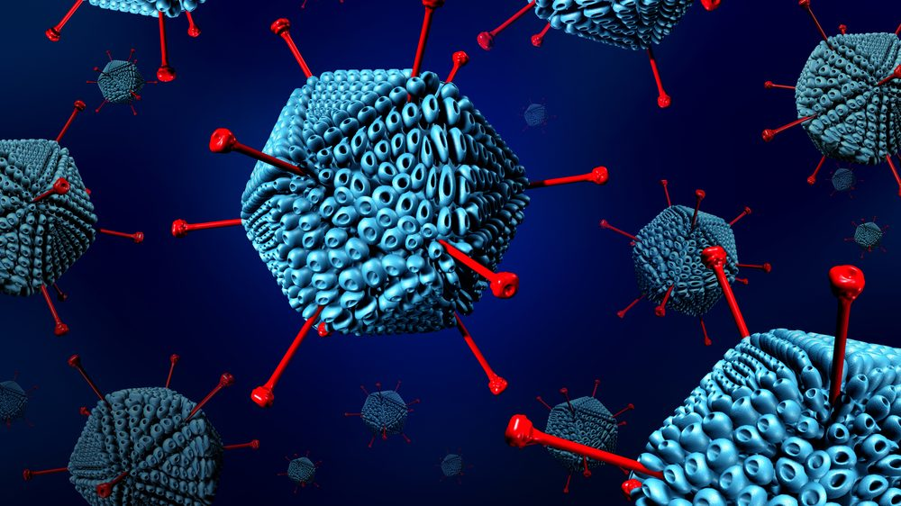
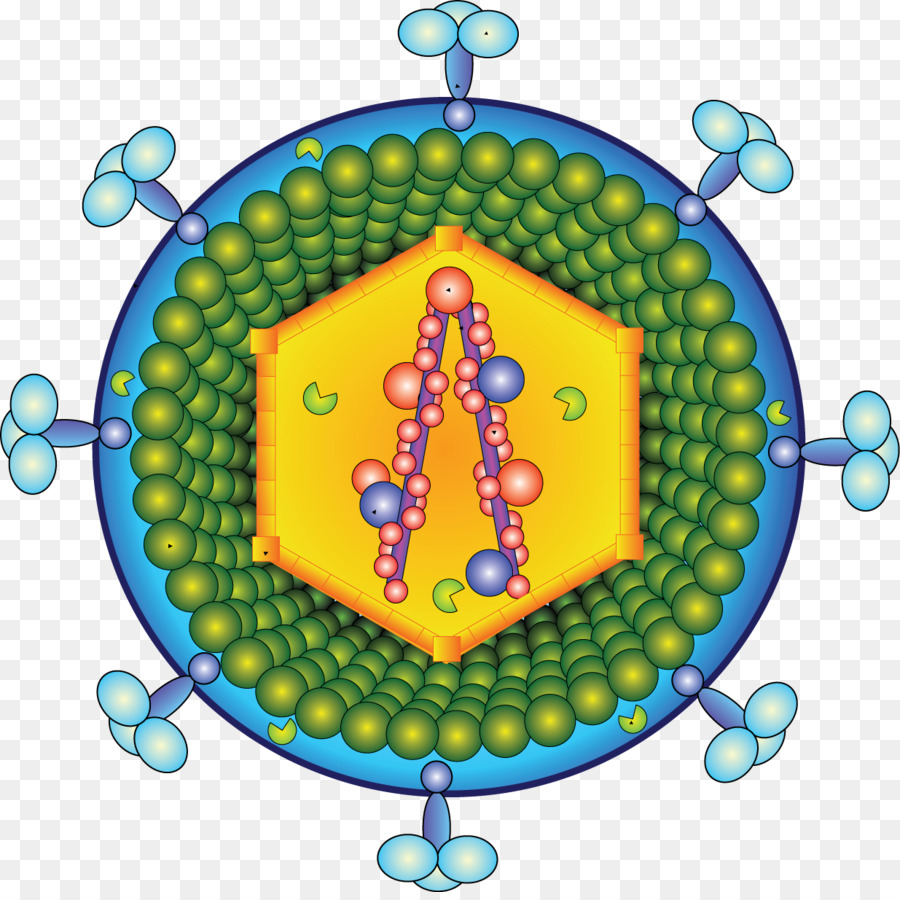
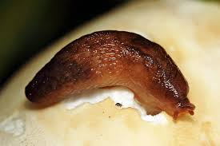

São um grupo de vírus que normalmente causam doenças respiratórias, como um resfriado comum, a conjuntivite (uma infecção no olho), crupe, bronquite ou pneumonia.
É uma família de vírus que possuem genoma constituído por RNA fita simples senso positivo e que replicam o RNA viral por meio de um processo denominado transcrição reversa, onde moléculas de DNA dupla fita (dsDNA) são geradas a partir de RNA, pela ação da enzima transcriptase reversa. A SIDA (ou AIDS) é uma doença causada pelo retrovírus HIV, Os retrovírus HTLV-1 e HTLV-2, sendo o primeiro é responsável pela ocorrência de algumas doenças como o linfoma das células T, já o segundo retrovírus citado, não há até o momento, ligação com alguma patologia determinada.
É o termo usado para um vírus que se transmite aos humanos através dos insetos (mosquitos), os quais se contagiam ao picar animais infectados, como os animais silvestres e pássaros domésticos, como a dengue.

São vírus que infectam bactérias, reproduzindo-se em seu interior. Vírus são patógenos, isto é, partículas infecciosas, constituídos basicamente de um ácido nucleico circundado por uma cápsula proteica, denominada de capsídeo. Em alguns casos, podem apresentar também um envelope membranoso.

É um animal que se alimenta sobretudo ou exclusivamente de membros do reino Fungi. A fungivoria é um tipo de predação, e é uma parte importante da rede alimentar do solo.
